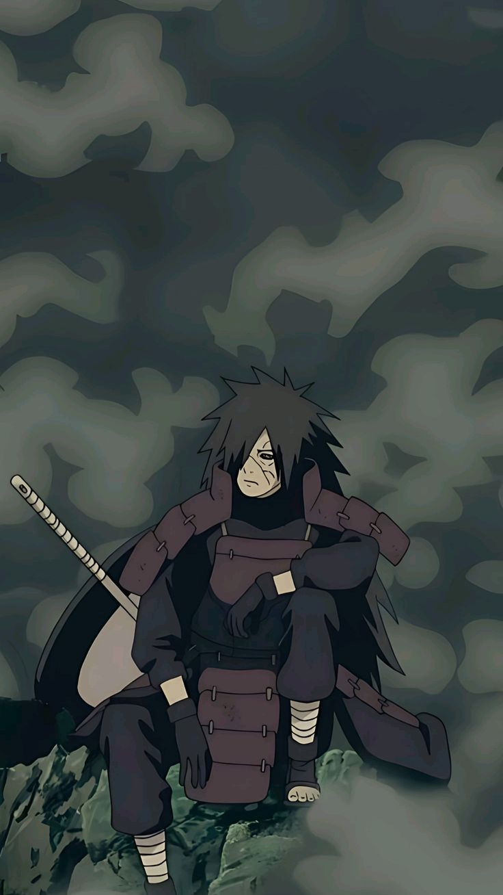
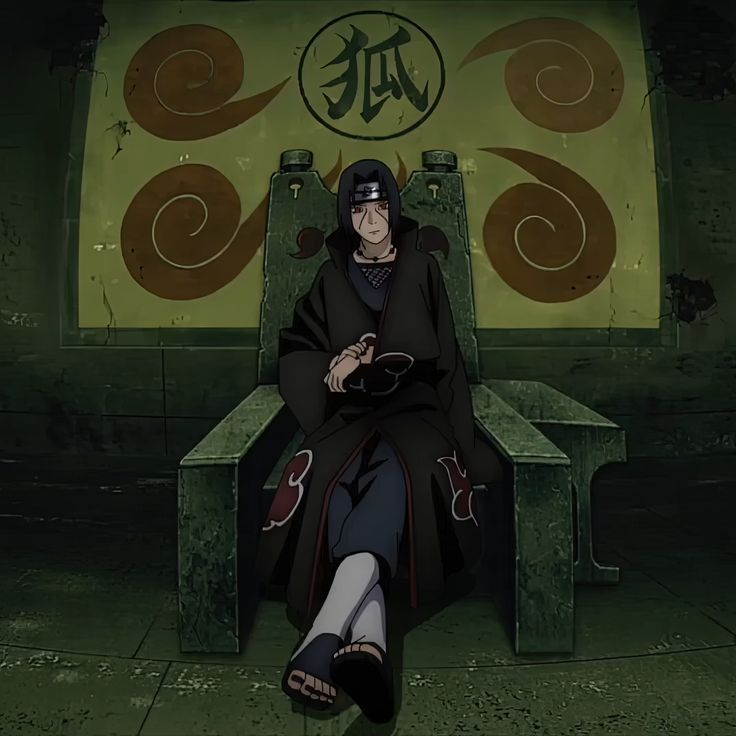
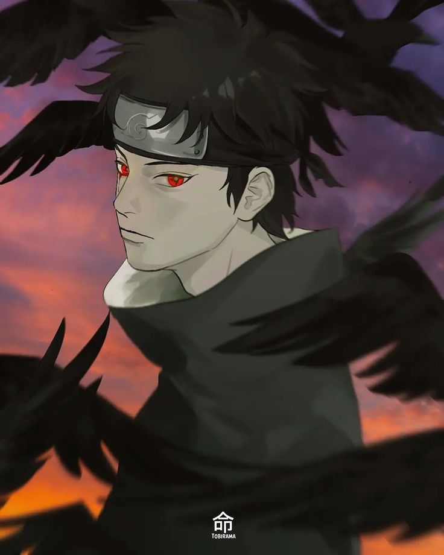
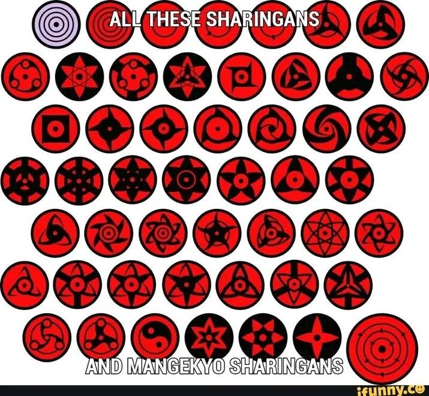
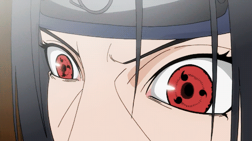
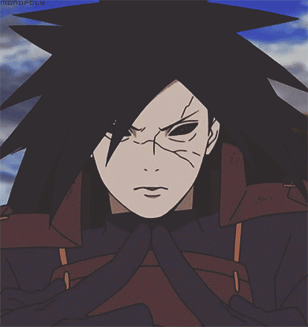

Uchiha Clan
Madara Uchiha
Madara Uchiha is one of the most powerful and influential characters in the Naruto series, created by Masashi Kishimoto.
He was a legendary shinobi from the Uchiha clan, known for his unmatched strength, mastery of the Sharingan, and his complex motivations for reshaping the world. Madara is a co-founder of Konohagakure (the Hidden Leaf Village) alongside Hashirama Senju, his greatest friend and rival. However, his vision for peace differed significantly from Hashirama’s, leading him down a dark and tumultuous path that would shape the course of shinobi history.
Itachi Uchiha
Itachi Uchiha is one of the most complex and tragic characters in Naruto. He is Sasuke Uchiha’s older brother and is widely regarded as one of the most skilled and intelligent shinobi to come from the Uchiha clan. However, his life story reveals a deep sacrifice made for the sake of his village and the people he loved.
Shisui Uchiha
Shisui Uchiha, often known as "Shisui of the Body Flicker," is a notable character from the Naruto series and a member of the Uchiha clan. He was one of the most talented and respected shinobi of his time and was a close friend of Itachi Uchiha. Shisui was famous for his extraordinary speed and mastery of the Body Flicker Technique, which allowed him to move so fast that he seemed to vanish and reappear instantly. He was also known for his kindness, loyalty, and sense of duty to both his clan and the Hidden Leaf Village.
Obito as Tobi Uchiha
Obito Uchiha is a central character in Naruto and one of the series' most complex antagonists. Initially introduced as a kind-hearted but clumsy young shinobi with dreams of becoming Hokage, Obito’s story takes a dark and tragic turn, eventually leading him to become a key figure behind the Akatsuki organization and the mastermind of the Fourth Great Ninja War.
.jpeg)
Sasuke Uchiha
Sasuke Uchiha is one of the main characters in Naruto and Naruto Uzumaki’s closest friend and rival. As one of the last surviving members of the Uchiha clan, Sasuke's life is marked by tragedy, vengeance, and, ultimately, redemption. His journey is complex, filled with anger, loss, and a search for identity.
.jpeg)
Uchiha’s Ability
The Uchiha clan, one of the most powerful clans in Naruto, is known for its incredible abilities, unique dojutsu, and intense emotional strength. Members of the Uchiha clan possess unique powers that make them some of the strongest shinobi in the Hidden Leaf Village and in the ninja world. Their powers stem primarily from their Sharingan, a dojutsu (eye technique) that grants them a wide range of abilities, including enhanced perception, genjutsu, and special combat techniques. Here’s a breakdown of the Uchiha clan’s major abilities:
The Sharingan is the Uchiha clan's signature dojutsu, which manifests as a red eye with black tomoe (comma-like markings). The Sharingan provides several powerful abilities: Enhanced Perception: The Sharingan allows users to perceive fast movements, predict opponents’ actions, and analyze chakra flows, giving them a significant advantage in battle. Copying Techniques: With the Sharingan, an Uchiha can instantly copy nearly any ninjutsu, taijutsu, or genjutsu they see, making it extremely versatile. Genjutsu: The Sharingan enables users to cast powerful illusions, trapping opponents in hallucinations that can disorient or incapacitate them. One of the most famous genjutsu is Tsukuyomi, a technique used by Itachi Uchiha to control and torture opponents in a hyper-realistic illusion that distorts time.

The Mangekyo Sharingan is an advanced form of the Sharingan that is awakened only through the intense emotional trauma of losing a loved one. Each Mangekyo Sharingan grants unique abilities specific to its user, and some of the strongest techniques in the series stem from it: Amaterasu: A black flame that burns anything in its line of sight, including chakra-based defenses. Amaterasu flames burn continuously until the target is completely consumed or extinguished by the user. Susanoo: A powerful chakra avatar that surrounds and protects the user, manifesting as a gigantic humanoid warrior made of chakra. It provides both offense and defense, with each user’s Susanoo having unique weapons or forms. Kotoamatsukami: An advanced genjutsu exclusive to Shisui Uchiha’s Mangekyo Sharingan. It allows him to subtly manipulate someone’s mind without them realizing, implanting thoughts or altering their actions. Kamui: A space-time ninjutsu unique to Obito Uchiha’s Mangekyo Sharingan. Kamui can create portals to a separate dimension, allowing the user to teleport parts of their body or other objects to avoid attacks and even travel between locations. The Mangekyo Sharingan has a downside, however: overusing it leads to progressive blindness. The only way to restore vision is by obtaining the eyes of a close relative, resulting in the Eternal Mangekyo Sharingan.
The Eteral Mangekyo Sharingan is achieved by transplanting the Mangekyo Sharingan from a close relative, usually a sibling. This evolution combines both sets of eyes and grants enhanced power and new abilities, along with immunity to the blindness caused by overusing the Mangekyo. With the Eternal Mangekyo Sharingan, users gain even greater mastery of their techniques and can access stronger forms of Susanoo.
.jpeg)
The Rinnegan is the rarest and most powerful dojutsu, considered a legendary eye that appears in very few individuals. It can only be awakened by combining the chakra of both Uchiha (Indra’s descendants) and Senju (Asura’s descendants) lineages. The Rinnegan grants abilities such as: The Six Paths Technique: Each path grants a unique power, such as the ability to summon creatures, manipulate gravity, absorb chakra, or revive the dead. Chibaku Tensei: A technique that creates a massive gravitational field, pulling in matter to form a giant sphere, essentially trapping opponents. Control over Life and Death: The Rinnegan allows its user to revive the deceased, as seen with Nagato reviving those who died in Konoha. The Rinnegan's powers make it one of the most formidable abilities in the series, often linked with legends of creation and destruction in the shinobi world.

All Uchiha have a natural affinity for Fire Release and often demonstrate mastery over fire techniques from a young age. Some of their signature techniques include: Fire Style: Fireball Jutsu: A basic but powerful technique where the user releases a large ball of fire from their mouth. Fire Style: Phoenix Flower Jutsu: A technique where the user creates smaller, scattered fireballs, which can be hard to avoid.
The Uchiha clan’s power is linked to an emotional concept called the “Curse of Hatred.” Due to their strong emotional bonds, Uchiha can sometimes be consumed by intense feelings of love or loss, which can twist into hatred and darkness. This inner turmoil can amplify their abilities, often pushing them to awaken the Mangekyo Sharingan. However, the Curse of Hatred has also led many Uchiha to tragic ends, fueling their anger and sometimes making them lose control.
Beyond their dojutsu, Uchiha clan members are naturally skilled fighters with high intelligence, speed, and agility. Their tactical minds allow them to make quick decisions in battle, adapt to opponents, and exploit weaknesses. They are often recognized as geniuses in combat, known for their clever strategies and deep understanding of shinobi tactics.
Susanoo is one of the most powerful and iconic abilities of the Uchiha clan, available only to those who have awakened the Mangekyo Sharingan in both eyes. It's a massive, humanoid avatar made entirely of chakra that surrounds and protects the user. As one of the rarest and most powerful abilities granted by the Mangekyo Sharingan, Susanoo serves as an offensive and defensive powerhouse, embodying immense destructive power and resilience.